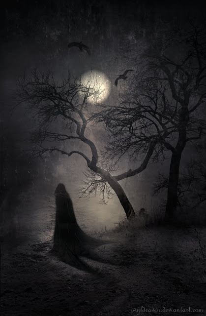

La bruja en las espinas
Cuentan que, hace muchos años, en Pisco era costumbre ver un enjambre de espinas en los techos, porque la gente las ponía para espantar a las brujas. Pues existía la creencia que cuando se escuchaban ruidos extraños en el techo, no eran los gatos; sino las malvadas brujas que trataban de meterse a sus casas. Asimismo debían poseer objetos de acero bendecido para espantarlas si alguna lograba entrar para hacer sus males.
Había uno que otra familia que no creía en las hechiceras ni en los relatos que se contaban en los callejones o en los bares de mala muerte. Esta historia le sucedió a uno de estas familias incrédulas.
En una de las calles más antiguas de Pisco, no recuerdo cuál, tal vez la Pérez Figuerola o la Marqués de Mancera, cuyos vecinos eran tranquilos y de buen vivir, amigueros y alegres como ninguna otra calle; pero al caer la tarde todos entraban a sus casa, trancaban la puerta y aseguraban las ventanas.
En una de las casas de la calle vivía la familia G., muy cristiana y devota de la milagrosa Beatita de Humay, que no creía ni en fantasmas, ni en diablos, ni en brujas. Una noche de luna llena, mientras todos dormían, en la calle solitaria los perros comenzaron a ladran como poseídos, y los gatos estaban inquietos pues corrían desesperados por todos lados ocultándose de alguien. De pronto, se oyó un sonido ensordecedor en el techo, todos despertaron y somnolientos se pusieron a ver qué era, cuando una carcajada de ultratumba los paralizó..
–¡Es la bruja que está en el techo! ¡Es la bruja, mamá! ¡Papá es la bruja!- dijo atropelladamente uno de los hijos.
-¡No, no! ¡Pueden ser rateros que tratan de espantarnos para que salgamos de casa y ellos entren a robar!- respondió la madre.
Armados con palos, fierros y dagas bendecidas, el padre y sus hijos, tragándose el susto, en silencio, subieron para alejar a la maligna o a los ladrones. Grande fue su sorpresa, que pusieron los ojos como platos y la piel se les puso como de gallina. -¡Papá, papá es una bruja! ¡Te dije que era una bruja! ¡Está atrapada en las espinas!- gritaban desesperados los hijos que temblaban como hojas arrastradas por el viento. La señora y sus hijas llorando a mares salieron a buscar ayuda. La malvada tenía un aspecto macabro e infernal, parecía un ser de pesadilla, producto de la maldad: cabeza de mujer, cuya mirada taladraba tus entrañas, cuerpo de ave y patas de cabra. Más aún, ella emanaba un olor nauseabundo como de muerte. Mientras los girones de su vestimenta negra se unían en extraño ritual como si las fuerzas del mal trataran de rescatarla. Los valientes familiares comenzaron a mentarle la madre y tirarle piedras, pero ella ni caso les hacía porque luchaba y luchaba contra las afiladas espinas con la intención de fugar. Ellos se acercaron más con la intención de espantarla.
Al verse ya cercada, la maléfica hizo un último esfuerzo y se liberó, saliendo volando, herida y maltrecha, con dirección a Pisco-Playa. En las espinas quedaron restos de piel, de plumas, de sangre y de telas negras.
Por eso, hasta hoy, en algunos sectores de la ciudad de Pisco se ven espinas en los techos. Ahora usted amigo lector, ya sabe el porqué de esta tradición.
